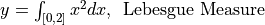
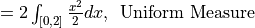
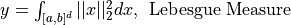
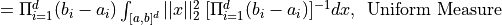
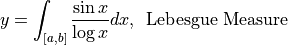

QMCPy for Lebesgue Integration¶
This notebook will give examples of how to use QMCPy for integration problems that not are defined in terms of a standard measure. i.e. Uniform or Gaussian.
from qmcpy import *
from numpy import *
Sample Problem 1¶


abs_tol = .01
dim = 1
a = array([[0]])
b = array([[2]])
true_value = 8/3
# Lebesgue Measure
integrand = QuickConstruct(dim, custom_fun = lambda x: x**2)
discrete_distrib = IIDStdUniform()
true_measure = Lebesgue(dim, lower_bound=a, upper_bound=b)
stopping_criterion = CLT(discrete_distrib, true_measure, abs_tol=abs_tol)
sol1, data1 = integrate(integrand, true_measure, discrete_distrib, stopping_criterion)
print('y = %.3f'%sol1)
print('Within tolerance:',abs((sol1-true_value))<abs_tol)
y = 2.670
Within tolerance: True
# Uniform Measure
integrand = QuickConstruct(dim, custom_fun = lambda x: 2*(x**2))
discrete_distrib = IIDStdUniform()
true_measure = Uniform(dim, lower_bound=a, upper_bound=b)
stopping_criterion = CLT(discrete_distrib, true_measure, abs_tol=abs_tol)
sol2, data2 = integrate(integrand, true_measure, discrete_distrib, stopping_criterion)
print('y = %.3f'%sol2)
print('Within tolerance:',abs((sol2-true_value))<abs_tol)
y = 2.665
Within tolerance: True
Sample Problem 2¶


abs_tol = .001
dim = [2]
a = array([[1,2]])
b = array([[2,4]])
true_value = ((a[0,0]**3-b[0,0]**3)*(a[0,1]-b[0,1])+(a[0,0]-b[0,0])*(a[0,1]**3-b[0,1]**3))/3
print('Answer = %.5f'%true_value)
Answer = 23.33333
# Lebesgue Measure
integrand = QuickConstruct(dim, custom_fun = lambda x: (x**2).sum(1))
discrete_distrib = Sobol()
true_measure = Lebesgue(dim, lower_bound=a, upper_bound=b)
stopping_criterion = CLTRep(discrete_distrib, true_measure, abs_tol=abs_tol)
sol1, data1 = integrate(integrand, true_measure, discrete_distrib, stopping_criterion)
print('y = %.5f'%sol1)
print('Within tolerance:',abs((sol1-true_value))<abs_tol)
y = 23.33334
Within tolerance: True
# Uniform Measure
integrand = QuickConstruct(dim, custom_fun = lambda x: (b-a).prod()*(x**2).sum(1))
discrete_distrib = Sobol()
true_measure = Uniform(dim, lower_bound=a, upper_bound=b)
stopping_criterion = CLTRep(discrete_distrib, true_measure, abs_tol=abs_tol)
sol2, data2 = integrate(integrand, true_measure, discrete_distrib, stopping_criterion)
print('y = %.5f'%sol2)
print('Within tolerance:',abs((sol1-true_value))<abs_tol)
y = 23.33330
Within tolerance: True
Sample Problem 3¶
Integral that cannot be done in terms of any standard mathematical functions (WOLFRAM)

Mathematica Code: Integrate[Sin[x]/Log[x], {x,a,b}]
abs_tol = .0001
dim = [1]
a = array([[3]])
b = array([[5]])
true_value = -0.87961
# Lebesgue Measure
integrand = QuickConstruct(dim, custom_fun = lambda x: sin(x)/log(x))
discrete_distrib = Lattice()
true_measure = Lebesgue(dim, lower_bound=a, upper_bound=b)
stopping_criterion = CLTRep(discrete_distrib, true_measure, abs_tol=abs_tol)
sol, data1 = integrate(integrand, true_measure, discrete_distrib, stopping_criterion)
print('y = %.3f'%sol)
print('Within tolerance:',abs((sol-true_value))<abs_tol)
y = -0.880
Within tolerance: True